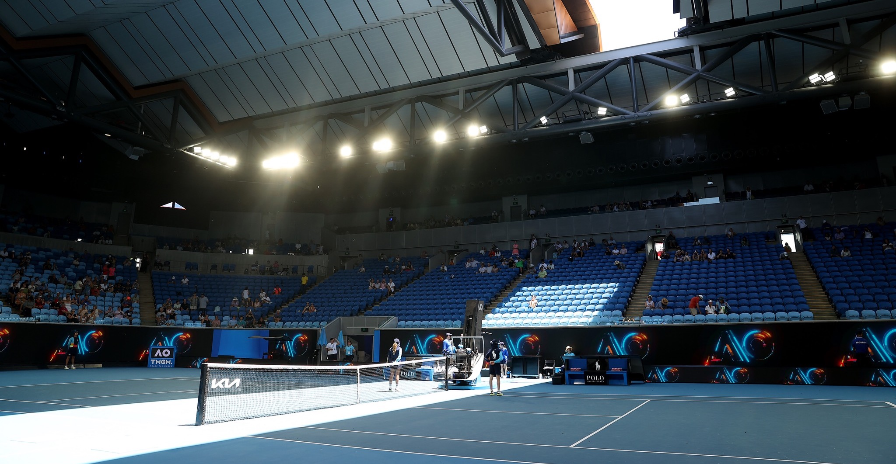

The Australian Open is the first grand slam of the tennis calendar, held annually in January in Melbourne, Australia. Known for its high-energy atmosphere, the tournament features the world's top players battling it out in singles, doubles, and mixed doubles events. The Australian Open has a rich history, with legendary champions like Rod Laver, Roy Emerson, and Serena Williams all claiming multiple titles. With its mix of tradition and innovation, the Australian Open is a must-see event for any tennis fan.
Check out these Photos of the Australien Open


